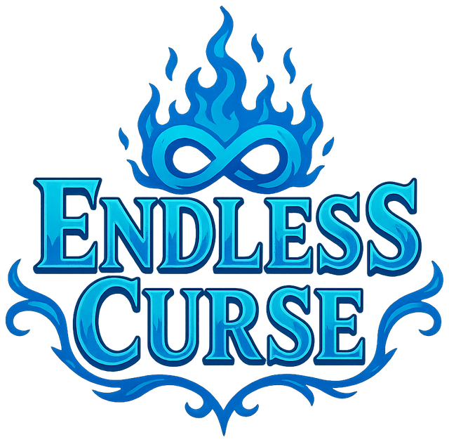

◆Ataque y salto
El ataque daña a los enemigos en un área frontal y también activa palancas y mecanismos. El salto da acceso a plataformas y zonas elevadas.

Una maldición te matará al llegar las 20:00. Tu única salida: volver una y otra vez a las 12:00 del mismo día y usar ese bucle para romperla… o convertirte en un dios del tiempo.
Un RPG de acción en tiempo real con cámara top-down y movimiento libre en todas direcciones. Exploras un poblado sin enemigos lleno de pistas y una mazmorra: las ruinas del antiguo castillo del reino.
El core loop: explora la mazmorra, choca con un bloqueo, vuelve al poblado a preguntar a los NPCs, retrocede en el tiempo si hace falta y consigue la pieza de equipamiento que te deja avanzar.
El ataque daña a los enemigos en un área frontal y también activa palancas y mecanismos. El salto da acceso a plataformas y zonas elevadas.
Al llegar al primer altar puedes invocar un no-muerto aliado que carga contra el enemigo más cercano. Cada altar sube su nivel y desbloquea nuevos tipos.
Cuerpo a cuerpo que te persiguen, magos que mantienen la distancia y voladores que solo son vulnerables al lanzarse en picado. Niveles del 1 al 5.
Solo tienes de las 12:00 a las 20:00 para avanzar: si llega la hora, la maldición te mata. Con el artefacto puedes retroceder a las 12:00 cuando quieras, volviendo al punto de inicio pero conservando todo tu progreso, equipo y conocimiento.
El tiempo es a la vez tu enemigo y tu herramienta: hay salas que solo se resuelven a una hora concreta, y NPCs que solo te ayudan si los encuentras en el momento justo.
15 NPCs con su propia rutina: se desplazan en tiempo real entre sus eventos y se reinician con cada bucle. Todos se dan pistas unos de otros.
Cada evento descubierto se apunta en el diario. En los bancos puedes esperar y saltar directamente a una hora entre las 13:00 y las 19:00.
Una pared que cae a las 18:00, el agua que baja, un gólem que despierta o una sombra que señala un botón: cada puzle depende de la hora del día.
Te vuelve mucho más ligero. Imprescindible para vencer a la cinta que te empuja en el camino turquesa.
Velocidad + · Alcaldesa
Un gran impulso que te hace saltar más alto para alcanzar llaves y plataformas del camino púrpura.
Salto + · Niño
Absorbe energía y la libera en un dash que ignora la gravedad unas décimas: justo lo que necesitas para cruzar precipicios.
Dash · Criada
Concentran la energía en un escudo frontal que bloquea ataques y resiste la ventisca del camino verde.
Escudo · Anciano
Las ruinas del antiguo castillo esconden 4 altares. Desde el vestíbulo principal se abren 4 caminos que puedes hacer en cualquier orden, cada uno con enemigos de distinta dificultad, un bloqueo que exige una pieza de equipamiento y un puzle de tiempo.
Balizas de teletransporte y rocas que se rompen como atajos evitan repetir recorridos tras cada bucle. Con los 4 altares se abre la sala del trono a las 19:00.
Cada altar aumenta tu asimilación de la maldición: más estadísticas y una invocación más poderosa.
Un combate en 4 fases contra ti mismo: duelo, trampas del escenario, invocaciones y bloqueo de tus propias mecánicas.
Los enemigos pueden soltar potenciadores temporales que duplican tu ataque o tu defensa durante unos segundos.
Un joven marginado encuentra un artefacto capaz de manipular el tiempo y empieza a usarlo en su propio beneficio. Pero un día, a las 20:00, su dueño aparece y lo castiga con una maldición: ahora solo puede volver a las 12:00, y si llegan las 20:00, morirá.
Una voz misteriosa promete ayudarle a romperla superando las ruinas del castillo… hasta que en la sala del trono descubre que esa voz es él mismo, del futuro, atrapado en una paradoja que convierte a cada versión en un dios del tiempo. Al final, la decisión es tuya: continuar el ciclo o romper el artefacto.